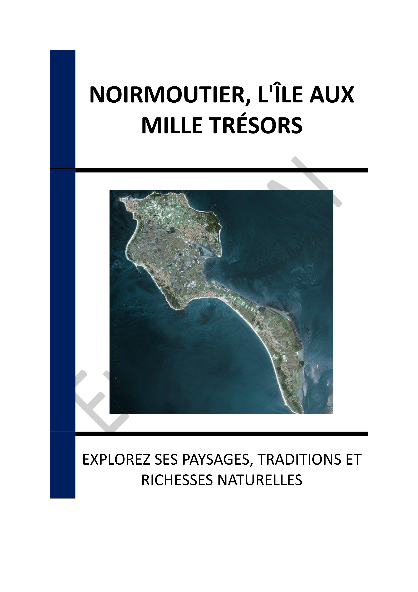

- INTRODUCTION - NOIRMOUTIER : UNE ÎLE ENTRE TRADITION ET NATURE
- Chapitre 1 - INTRODUCTION À L'ÎLE DE NOIRMOUTIER : HISTOIRE ET GÉOGRAPHIE
- Chapitre 2 - LE MICROCLIMAT ET LA FLORE DE NOIRMOUTIER : L'ÎLE AUX MIMOSAS
- Chapitre 3 - LES MARAIS SALANTS : TRADITION ET SAVOIR-FAIRE
- Chapitre 4 - LES PLAGES ET ACTIVITÉS NAUTIQUES : DÉTENTE ET SPORTS
- Chapitre 5 - LA BIODIVERSITÉ DE L'ÎLE : FAUNE ET FLORE REMARQUABLES
- Chapitre 6 - LE PATRIMOINE ARCHITECTURAL : CHÂTEAUX ET ÉGLISES
- Chapitre 7 - LES TRADITIONS CULINAIRES : PRODUITS DU TERROIR ET GASTRONOMIE LOCALE
- Chapitre 8 - ACTIVITÉS TOURISTIQUES : EXPLORATION ET LOISIRS
- CONCLUSION - NOIRMOUTIER : UNE SYMPHONIE ENTRE TERRE ET MER
📄 Consulter les annexes du livre
Mentions légales